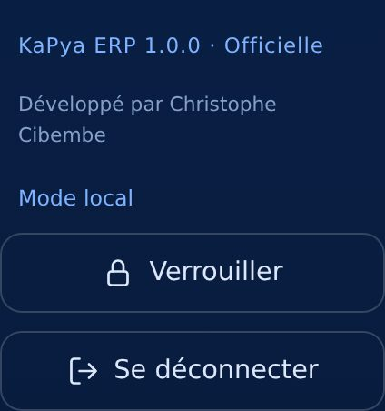
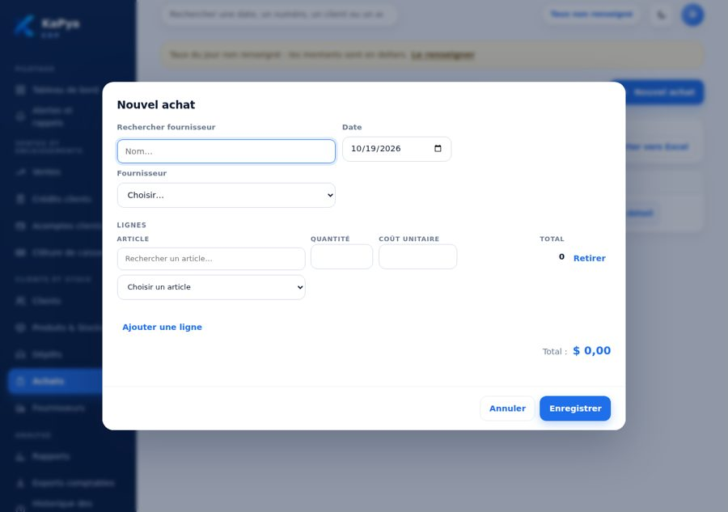
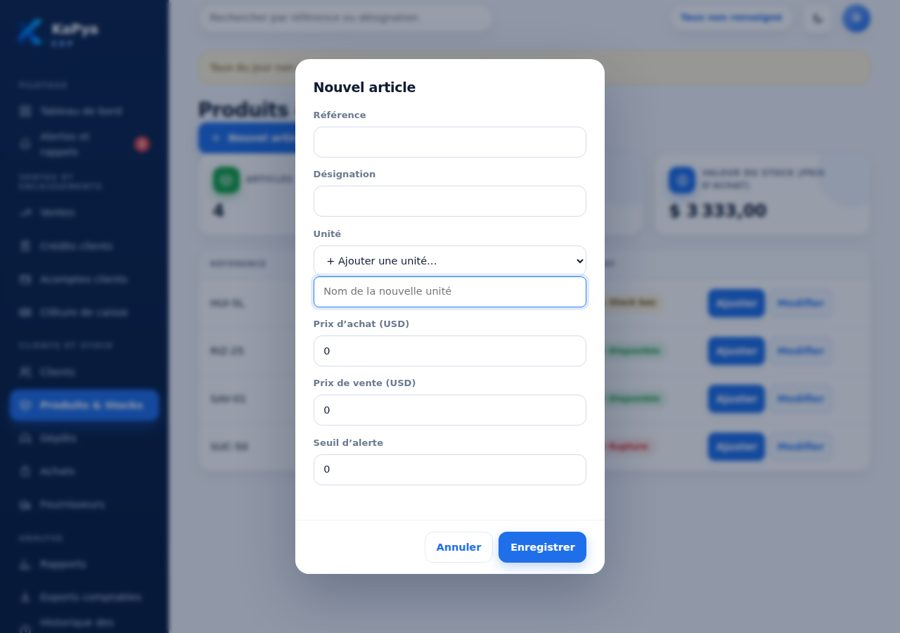
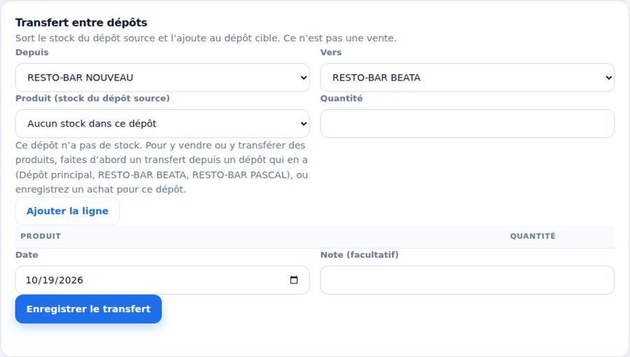
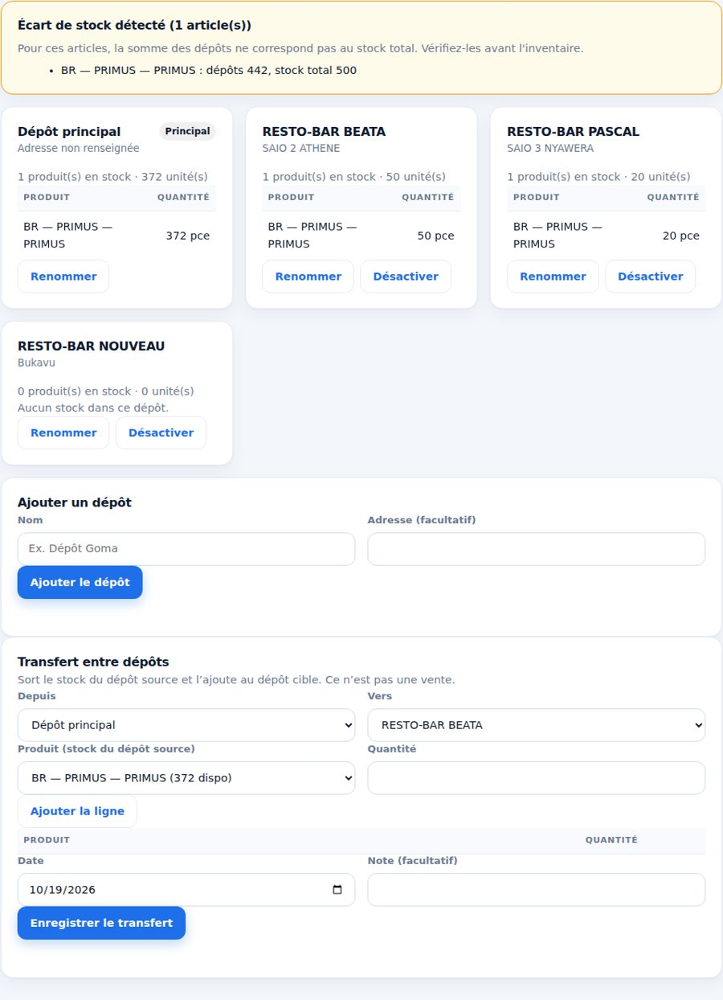
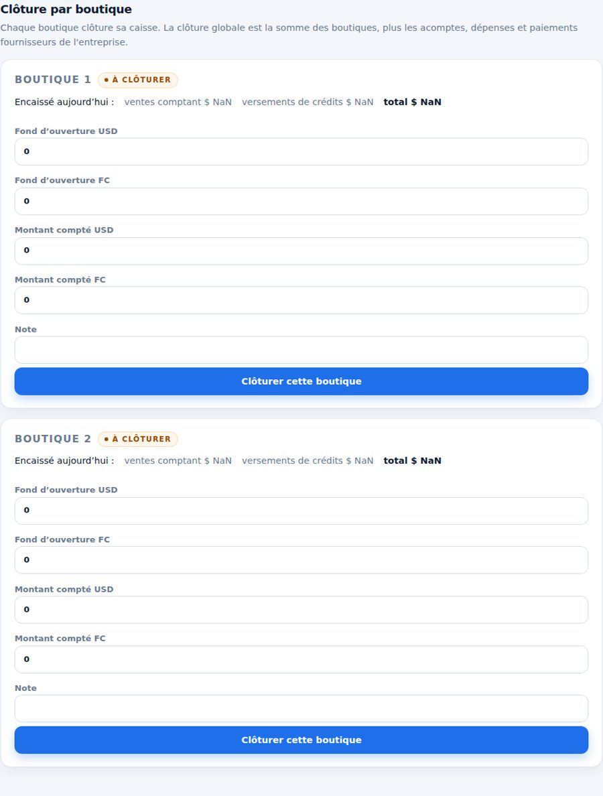
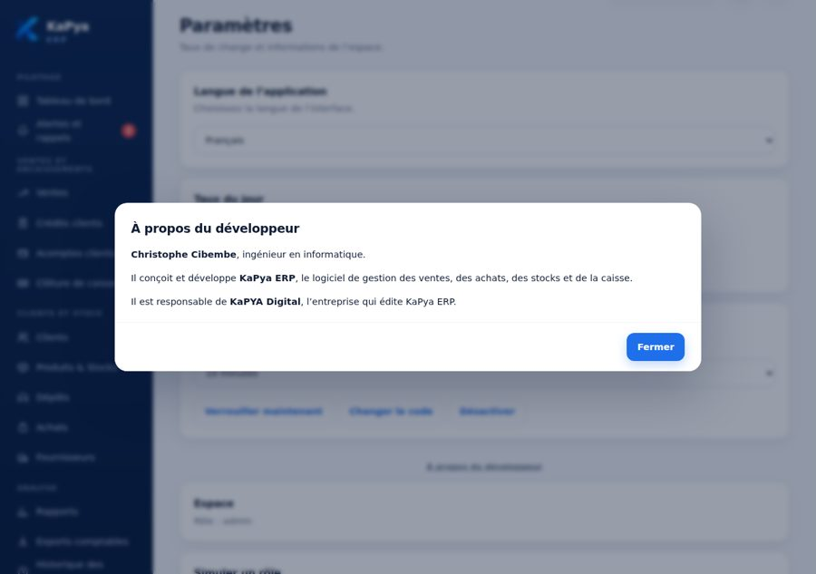
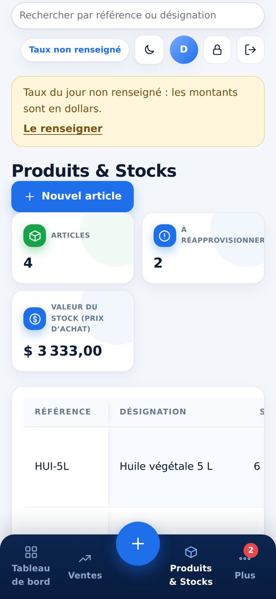

1. Présentation et choix de la version
KaPya est un logiciel de gestion commerciale : ventes, achats, stocks, caisse, crédits et rapports. Il existe en deux versions qui utilisent les mêmes comptes et les mêmes données :
| Version | Pour qui | Où l'ouvrir |
|---|---|---|
| KaPya ERP | Ordinateur, entreprises à plusieurs boutiques | L'adresse habituelle du site |
| KaPya app | Téléphone, petites entreprises | L'adresse du site suivie de /app |

2. Première connexion
password123, sont refusés.3. Les rôles
Chaque personne a un rôle, qui détermine ce qu'elle voit et ce qu'elle peut faire.
| Rôle | Ce qu'il peut faire |
|---|---|
| Gérant (admin) | Tout : ventes, achats, stock, dépôts, équipe, rapports, coûts, sauvegardes. |
| Responsable | Presque tout, sauf les sauvegardes et les exports comptables. |
| Comptable | Rapports, caisse et chiffres de l'entreprise, sans les sauvegardes. |
| Facturier | Ventes, factures (modifier et supprimer celles de sa boutique), encaissements, clients, clôture de sa boutique. |
| Lecture seule | Consultation des ventes, des stocks et des rapports, sans modification. |
4. Ventes et factures
Faire une vente
Modifier ou supprimer une facture
Ouvrez la facture dans Ventes, puis cliquez sur Modifier ou Supprimer. Une facture supprimée remet les quantités dans la boutique.
5. Crédits et versements
Les ventes à crédit apparaissent dans Crédits. Le facturier voit tous les crédits de l'entreprise, pour pouvoir les recouvrer.
Le solde du client se met à jour automatiquement. Les acomptes (sommes versées à l'avance) se gèrent dans Acomptes clients.
6. Stock, achats et dépôts
Les articles sont communs à toute l'entreprise. Les quantités sont propres à chaque dépôt (boutique).
Enregistrer un achat
Achats > Nouvel achat : choisissez le fournisseur, les articles, les quantités et le dépôt de réception. Le numéro d'achat est automatique (ACH-…).

Unités des articles
Dans Produits & Stocks, l'unité se choisit dans une liste (pièce, carton, bidon, sac, kilogramme, litre…). Pour une unité qui n'existe pas, choisissez « + Ajouter une unité ».

Ajouter une boutique (dépôt)
Plus > Dépôts > Ajouter un dépôt : saisissez le nom et l'adresse. Cette fonction n'existe qu'en formule Standard ou Premium.
7. Boutiques et transferts
Une boutique est un dépôt. Elle a son propre stock, ses propres ventes et sa propre clôture de caisse.
Transférer du stock d'un dépôt à un autre
Un transfert n'est pas une vente : il ne crée pas de facture et ne touche pas à la caisse.


8. Clôture de caisse
La clôture se fait en deux temps, chaque jour :

Hors connexion
Si la connexion est coupée, vous pouvez saisir la clôture. Elle est gardée sur l'appareil et envoyée au retour de la connexion.
9. Tableau de bord et rapports
Tableau de bord
Le tableau de bord affiche le résumé de caisse du jour, les indicateurs clés, les graphiques et les points à surveiller. Le gérant y trouve aussi les modifications du jour (factures créées, modifiées ou supprimées). Vous pouvez choisir les blocs affichés avec le bouton Personnaliser.
Rapports
| Rapport | Contenu | Qui |
|---|---|---|
| Journalier | Ventes, encaissements et achats du jour | Tous |
| Entre deux dates | Même rapport sur une période (un mois, par exemple) | Tous |
| Inventaire, entrées et sorties de stock, synthèse 6 mois | Stock et coûts | Gérant, responsable, comptable, lecture seule |
| Produits et marges | Bénéfice par article et par client, évolution, résultat net | Gérant, responsable |
Le bénéfice brut ne retient que le coût des articles vendus (net des retours et des avoirs). Le résultat net en déduit les dépenses saisies dans Caisse sur la même période. Le tableau de bord affiche les deux : « Bénéfice brut » et « Résultat net ».
Pour imprimer : Imprimer / PDF, au format A4 (recommandé). Pour l'envoyer : Envoyer par WhatsApp. Sur téléphone, choisissez WhatsApp dans la liste de partage.
10. Équipe et paramètres
Ajouter un membre
Taux du jour
Mettez à jour le taux du dollar dans les paramètres chaque jour : il sert aux montants en francs congolais et à la clôture.

11. Sécurité : verrouillage et mot de passe
Verrouiller l'application
Quand vous quittez votre poste, cliquez sur Verrouiller (menu latéral sur ordinateur, icône cadenas en haut sur téléphone). Saisissez votre code pour revenir.
Recharger la page ne lève pas le verrou : le code est redemandé.
Activer le code
Paramètres > Code de verrouillage : saisissez un code de 4 à 6 chiffres, deux fois. Le verrouillage automatique après inactivité se règle dans la même carte. Le code est propre à chaque appareil.
12. Utiliser KaPya app sur téléphone
KaPya app est la version pour téléphone. Elle utilise les mêmes comptes et les mêmes données.
Installer sur Android
Travailler hors ligne
Les écrans déjà ouverts restent consultables sans réseau. Les ventes, achats, encaissements, retours, clôtures et modifications de fiches sont d'abord enregistrés sur le téléphone, puis envoyés automatiquement au retour de la connexion.
Le badge de synchronisation indique les opérations en attente ou refusées. Le détail se trouve dans Paramètres > Mode hors-ligne : vérifiez la file d'attente et les pièces refusées avant de fermer l'application.
Mettre à jour l'application
KaPya app se met à jour toute seule à la réouverture, si le téléphone est connecté. La version utilisée est affichée dans Paramètres et en bas du menu. Si un écran semble ancien, fermez complètement l'application puis rouvrez-la.
Sécurité sur téléphone
Activez un code de verrouillage dans Paramètres > Code de verrouillage. L'application se verrouille après inactivité et après quelques instants en arrière-plan ; recharger la page ne lève pas le verrou. Le code est propre à chaque appareil.
Problèmes fréquents
| Ce que vous voyez | Que faire |
|---|---|
| Le bouton d'installation n'apparaît pas | Ouvrez le lien dans Chrome à jour, puis cherchez Installer l'application dans le menu ⋮ ou dans Paramètres > Application. |
| Les ventes hors ligne ne partent pas | Reconnectez le téléphone, rouvrez l'application et attendez une à deux minutes. Vérifiez la file dans Paramètres > Mode hors-ligne. |
| Un écran demande une connexion | Ouvrez cet écran une fois en ligne pour l'enregistrer sur le téléphone. |
| Le code de verrouillage est oublié | Touchez Se déconnecter sur l'écran verrouillé, reconnectez-vous avec votre mot de passe, puis choisissez un nouveau code. |
Recherche et écrans
La barre de recherche est en haut de chaque liste. Les boutons du bas donnent accès au tableau de bord, aux ventes, aux produits et au menu Plus.

13. Sauvegarde
Plus > Sauvegarde est réservé au gérant et n'existe qu'à partir de la formule Standard (elle est absente de la formule Basique). La restauration d'un fichier est réservée à la formule Premium.
Sauvegarde automatique
Une copie complète de l'entreprise est enregistrée chaque nuit et conservée 14 jours. La page affiche les dernières copies et le bouton Créer une sauvegarde maintenant permet d'en lancer une sans attendre.
Fichier de sauvegarde
Préparer la sauvegarde télécharge un fichier qui contient les ventes, achats, paiements, clients, fournisseurs, produits, mouvements de stock, clôtures et l'historique des actions. Les comptes utilisateurs et leurs mots de passe n'y figurent pas : ils restent gérés par Supabase.
Restaurer
La restauration n'est possible que dans une entreprise vide (aucune vente, aucun achat, aucun client, aucun produit). Choisissez le fichier, vérifiez l'aperçu, cochez la confirmation, puis Restaurer.
14. Documents et fonctions complémentaires
Proformas (devis)
Ventes et encaissements > Proformas. Un proforma présente un devis au client : il ne change pas le stock et ne prend pas de numéro de facture. Depuis la liste, utilisez Aperçu, Imprimer ou WhatsApp. Quand le client accepte, Facturer comptant ou Facturer à crédit crée la facture et déduit le stock ; Annuler clôt un devis sans suite.
Bons de commande
Clients et stock > Bons de commande (gérant et responsable). Un bon est une demande d'achat envoyée au fournisseur : le stock ne change pas. À la livraison, Recevoir (créer l'achat) enregistre l'achat réel et fait entrer les quantités dans le dépôt choisi. Annuler ferme un bon qui ne sera pas livré.
Avoirs
Ventes et encaissements > Avoirs. Un avoir corrige une facture (prix erroné, remise, reprise financière) sans la supprimer et sans modifier le stock. Choisissez la facture, la quantité à corriger sur chaque ligne, puis enregistrez. Le solde de la facture ou du client est corrigé du montant de l'avoir.
Retours
Ventes et encaissements > Retours.
- Retour client : choisissez la facture et les quantités rendues. Le stock revient dans la boutique de la facture. Le gérant ou le responsable peut établir un avoir pour créditer le client ; un facturier enregistre le retour, puis l'avoir se fait dans la page Avoirs.
- Retour fournisseur (gérant et responsable) : le stock sort du dépôt choisi, avec le fournisseur et le motif.
Lots et péremption
Clients et stock > Lots et péremption. Pour un produit périssable, cochez le suivi de la péremption sur sa fiche.
Les sorties consomment d'abord les lots qui périment le plus tôt. La page signale les lots qui arrivent à échéance dans les 30 jours.
Inventaire physique
Paramètres > Inventaire physique (gérant et responsable). Choisissez un dépôt, saisissez les quantités réellement comptées, puis Valider l'inventaire. Les écarts corrigent le stock de façon définitive. Un inventaire en cours peut être repris plus tard.
Personnel et paiements
Administration > Personnel et paiements (formule Premium, gérant). Ajoutez une personne avec un salaire fixe par mois ou une paie par jour ou par tâche, enregistrez les paiements et consultez le total du mois. Ces paiements ne touchent pas la caisse : ils sont suivis séparément.
Exports comptables
Analyse > Exports comptables (formule Standard ou Premium). Choisissez la période, puis Ventes, Achats ou Inventaire au format Excel. Les boutons PDF sont réservés à la formule Premium. L'inventaire est calculé à la date du jour ; les fichiers reprennent l'en-tête et le logo de l'entreprise.
Alertes et rappels
Plus > Alertes et rappels. La page rassemble, en lecture seule : les produits en rupture ou sous le stock minimum, les crédits clients en retard de plus de 30 jours et les factures fournisseur à payer. Les montants ne sont affichés qu'aux rôles autorisés à consulter les rapports.
15. En cas de problème
| Ce que vous voyez | Que faire |
|---|---|
| La page ne s'affiche pas | Vérifiez la connexion, puis rechargez la page (Ctrl+F5 sur ordinateur). |
| « Activer votre accès » | Saisissez le code donné par le gérant. |
| « Vous ne pouvez transférer que depuis votre boutique » | Demandez au gérant l'autorisation de transférer depuis les autres dépôts. |
| « Clôturez d'abord chaque boutique » | Clôturez la caisse de chaque boutique avant la clôture globale. |
| « Aucune boutique n'est attribuée à votre compte » | Le gérant doit vous attribuer une boutique dans Paramètres > Membres. |
| Le stock ne correspond pas | Le gérant regarde l'alerte « Écart de stock » sur la page Dépôts. |
| Un message d'erreur inconnu | Notez le texte exact et prévenez le gérant ou le support KaPya. |